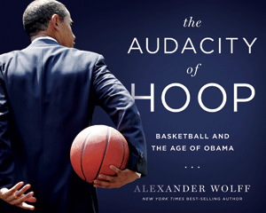

<body bgcolor="#FFFFFF" text="#000000" link="#0000FF" vlink="#CC0000" alink="#CC0000"><center><hr width="350" size="1" align="center" noshade>The influence Barack Obama has had on basketball and vice versa, in essays and photographs<hr width="350" size="1" align="center" noshade><p><a href="https://cdcshoppingcart.uchicago.edu/Cart/ChicagoBook.aspx?ISBN=9781439913093&&PRESS=temple" target="_top">Buy this book!</a> | <a href="https://cdcshoppingcart.uchicago.edu/Cart/Cart.aspx?PRESS=temple" target="_top">View Cart</a> | <a href="https://cdcshoppingcart.uchicago.edu/Cart/Cart.aspx?PRESS=temple" target="_top">Check Out</a></p><p></p></center><!--none//--><h1>The Audacity of Hoop</h1>
<H2>Basketball and the Age of Obama</H2>
<h3>Alexander Wolff</h3>
<P>cloth 1-4399-1309-9 $40.00, Oct 15, <FONT COLOR=#990033>Available</FONT>
<BR> 224 pp
10x8
22&nbsp;halftones 109&nbsp;color&nbsp;illustrations
</P><BLOCKQUOTE><I>"</i>The Audacity of Hoop<i>—like the game of basketball it evokes and the political icon who memorably plays it—is a beautiful and timely book that moves in the graceful rhythms of the hardwood that President Obama has embraced. Basketball has not only taught Obama to be a fierce but disciplined competitor; it has also offered him a swagger and a vocabulary of physical cool and mental toughness that have carried him from street games to the biggest court in the world: the American presidency. Wolff’s brilliant and lovely pickup game of a book is a fitting metaphor to explore the racial and cultural dimensions of a man who used basketball to conquer the world and then used that power to play, as often as he could, wherever he was, the game that he—and the nation he leads—loves."</i><br>&#151<b>Michael Eric Dyson</b>, author of <i>The Black Presidency: Barack Obama and the Politics of Race in America</i></I></BLOCKQUOTE>
<P>While basketball didn’t take up residence in the White House in January 2009, the game nonetheless played an outsized role in forming the man who did. In <I>The Audacity of Hoop</I>, celebrated sportswriter Alexander Wolff examines Barack Obama, the person and president, by the light of basketball. This game helped Obama explore his identity, keep a cool head, impress his future wife, and define himself as a candidate.
<P>Wolff chronicles Obama’s love of the game from age 10, on the campaign trail—where it eventually took on talismanic meaning—and throughout his two terms in office. More than 125 photographs illustrate Obama dribbling, shooting free throws, playing pickup games, cooling off with George Clooney, challenging his special assistant Reggie Love for a rebound, and taking basketball to political meetings. There is also an assessment of Obama’s influence on the NBA, including a dawning political consciousness in the league’s locker rooms.
<P>Sidebars reveal the evolution of the president’s playing style, “Baracketology”—a not-entirely-scientific art of filling out the commander in chief’s NCAA tournament bracket—and a timeline charts Obama’s personal and professional highlights.
<P>Equal parts biographical sketch, political narrative, and cultural history, <I>The Audacity of Hoop</I> shows how the game became a touchstone in Obama’s exercise of the power of the presidency.
<BR>&nbsp;<h2>Excerpt</h2><P>Excerpt available at <a href="http://www.temple.edu/tempress">www.temple.edu/tempress</a></p>
<BR>&nbsp;<h2>Reviews</h2>
<p><i>"The cool, the flow, the edge, the drive, the individual and the team, the black and white—all of that is Barack Obama playing basketball, the American game. To those who consider the president a mystery, </i>The Audacity of Hoop<i> offers a key to understanding him, through Alex Wolff's fluid prose and Pete Souza's evocative photographs."</i><br>&#151<b>David Maraniss</b>, Pulitzer Prize winner, <i>New York Times</i> bestselling author of <i>First in His Class: The Biography of Bill Clinton</i>, and author of <i>Barack Obama: The Story</i>
<p><i>"</i>The Audacity of Hoop<i> reveals not only how Barack Obama’s first love shaped his character and fired his ambitions but also how, even now, the president’s pickup game is ‘a kind of polygraph of the heart.’ With poignant analysis and sparkling prose, Alexander Wolff shows us how basketball helped our forty-fourth president become as skilled at consensus building as he is at trash-talking. I love this book."</i> <br>&#151<b>Don Van Natta Jr.</b>, ESPN Investigative Reporter, Pulitzer Prize winner, <i>New York Times</i> best-selling author of <i>First Off the Tee: Presidential Hackers, Duffers, and Cheaters from Taft to Bush</i>, co-author of <i>Her Way: The Hopes and Ambitions of Hillary Rodham Clinton</i>, and author of <i>Wonder Girl: The Magnificent Sporting Life of Babe Didrikson Zaharias</i>
<p><i>"A highly informed and fascinating look at the intersection of sports and politics that led me to unexpected realizations about Obama, the presidency, and the world of basketball. Smart and fun."</i><br>&#151<b>Gerald Early</b>, Merle Kling Professor of Modern Letters, Washington University in St. Louis
<p><i>"Alexander Wolff, with grace and marvelous insight, has written a beautiful basketball book that fans of the game will love. Whether you’re a Republican or Democrat, </i>The Audacity of Hoop<i> will enthrall you. Wolff vividly explores basketball’s influence on the identity of President Obama and in the process reveals something magical about the sport itself."</i><br>&#151<b>Kevin Merida</b>, Managing Editor of the <i>Washington Post</i> and co-author of <i>Obama: The Historic Campaign in Photographs</i>
<p><i>"The king-sized volume displays Obama's love for the game all the way back to the age of 10.... </i>The Audacity of Hoop<i> is more than just a coffee-table book; it's a biographical sketch and political narrative of how the game became a touchstone of Obama's residency in the White House."</i>
<br>&#151<b><i>Slam</i></b>
<p><i>"In the book—which features large-scale photographs of the President at play, many taken by the official White House photographer, Pete Souza—Wolff breaks down the particulars of the President’s game.... Presidents are endlessly scrutinized, and must constantly calibrate their self-presentations to appeal to the electorate. Basketball, for all of its cultural complexity, has arguably been, as Wolff writes, one way for Obama 'to let the public see exactly who he was.'"</i>
<br>&#151<b><i>The New Yorker</i></b>
<p><i>"Wolff muses on Barack Obama's private and public relationship with the ball-and-hoop pastime. Now, that sounds like a slam dunk!"</i> <br>&#151<b><i>Seven Days</i></b>
<p><i>"When Barack Obama was elected president in 2008, the longtime </i>Sports Illustrated<i> writer Alex Wolff did a piece for the magazine about Obama and basketball. That began a long journey for Wolff, a Cornwall resident, tracing the president’s heartfelt ties to this most American of games."</i> <br>&#151<b><i>Addison Independent</i></b>
<p><i>"</i>The Audacity of Hoop<i> is a handsome, coffee-table book, richly illustrated with photographs of Obama both on and off the court. As noted by official photographer Pete Souza, Obama seems most at ease when playing or talking basketball, and such scenes deliver particularly compelling images of the president."</i> <br>&#151<b><i>Chapter 16</i></b>
<p><i>"Adapted from a 2009 essay in </i>Sports Illustrated<i>, this book-length effort is fuller, richer in scope, with the benefit of six more years of hindsight, and it's illustrated with a time capsule's worth of pictures, many of them by longtime White House photographer Pete Souza. Wolff examines Barack Obama in the light of basketball, which proves to be a surprisingly effective, and malleable metaphor.... There's an improvisational feel to 'The Audacity of Hoop,' with sidebars, a timeline and profiles of other ballers in 'the White House orbit.' What unifies it all are the evocative photographs.... They're more sublime than splashy."</i> <br>&#151<b><i>New York Times Book Review</i></b>
<p><i>"In a class by itself, and the perfect 'stocking stuffer' for any sports or political enthusiast is the picture and text book, </i>The Audacity of Hoop<i>, by Sports Illustrated correspondent Alexander Wolff. More than any other recent president, Barack Obama has embraced a major American sport -- as a player and as a fan. This book is an exploration of the sports journey of Barack Obama, and the role of sports in national politics."</i><br>&#151<b><i>Huffington Post</i></b>
<p><i>"</i>The Audacity of Hoop<i> illuminated how President Barack Obama has helped cultivate an era in American life where politics and basketball collide in unprecedented ways.... Wolff's prose is lively yet accessible to readers."</i>
<br>&#151<b><i>Sports in American History</i></b>
<BR>&nbsp;<h2>Contents</h2><P>
<p>1. Basketball Jones
<br>
<br>2. Hoop Dreams from His Father
<br>&nbsp; Gaming the President Out
<br>&nbsp; The First Brother-in-Law
<br>
<br>3. Running Game
<br>&nbsp; “The Little Brother I Never Had”
<br>&nbsp; Obama, One-on-One
<br>&nbsp; Players’ Choice
<br>
<br>4. Power, Forward
<br>&nbsp; Baracketology
<br>&nbsp; Hardwood Cabinet
<br>&nbsp; The Secretary of Schoolin’ People
<br>&nbsp; Center Circles
<br>&nbsp; Lip Service
<br>&nbsp; Ding-Dong Diplomacy
<br>&nbsp; The World’s Most Elegant Locker Room
<br>&nbsp; The Loyal Opposition
<br>&nbsp; The Inevitability of Golf
<br>
<br>5. The Game in the Age of Obama
<br>&nbsp; Shooting the First Shooter
<br>
<br>Timeline
<br>
<br>Acknowledgments
<br>Notes
<br>Selected Bibliography
<br>Index
</P><BR>&nbsp;<H2>About the Author(s)</H2>
<P><I>New York Times</I> bestselling author <b>Alexander Wolff</B> is a senior writer at <I>Sports Illustrated</I>, co-author (with Armen Keteyian) of <I>Raw Recruits: The High Stakes Game Colleges Play to Get Their Basketball Stars–and What It Costs to Win</I>, and the author of <I>Big Game, Small World: A Basketball Adventure</I>. Visit him online at <a href="http://theaudacityofhoop.com/" target="new">TheAudacityofHoop.com</a>.</P>
<BR><H2>Subject Categories</H2>
<p><A HREF="/tempress/general.html" TARGET="_top">General Interest</a>
<BR><A HREF="/tempress/sports.html" TARGET="_top">Sports</a>
<BR><A HREF="/tempress/african.html" TARGET="_top">African American Studies</a>
</p>
<p align="center"><a href="https://cdcshoppingcart.uchicago.edu/Cart/ChicagoBook.aspx?ISBN=9781439913093&&PRESS=temple" target="_top">Buy this book!</a> | <a href="https://cdcshoppingcart.uchicago.edu/Cart/Cart.aspx?PRESS=temple" target="_top">View Cart</a> | <a href="https://cdcshoppingcart.uchicago.edu/Cart/Cart.aspx?PRESS=temple" target="_top">Check Out</a></p><p><font face="Arial" size="1"><a href="copyright.html" onMouseOver="window.status='Web Copyright Policy';return true;" onMouseOut="window.status=''" title="Web Copyright Policy">&copy;</a> 2016 <a href="http://www.temple.edu" target="new" onMouseOver="window.status='Link to Temple University home page';return true;" onMouseOut="window.status=''" title="Link to Temple University home page">Temple University</a>. All Rights Reserved. http://www.temple.edu/tempress/titles/2384_reg.html</font></p>